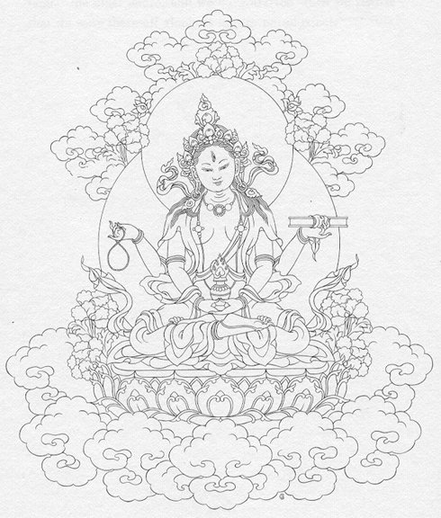
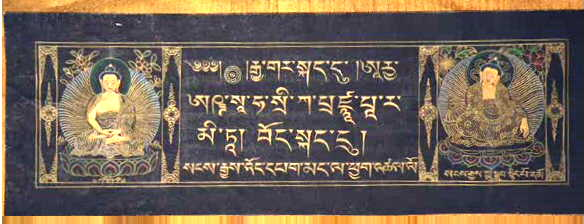
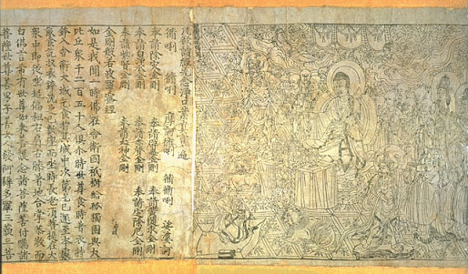
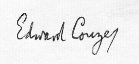
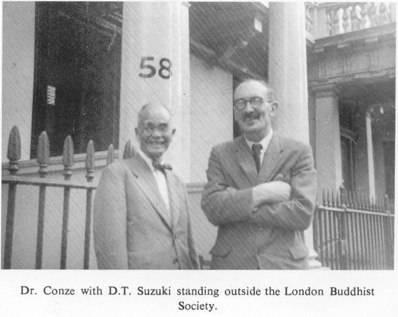

`
nmae
-gvTyE AayR£à}aparimtayE
As of now, Sanskrit Buddhist texts on the web are few and far between. Even hard-copy versions of this material are not easy to come by, in contrast to the Pali, Chinese and Tibetan Canons, which are easily aquired. In the spirit of trying to remedy this, I provide Conze's recension of the Heart Sutra, in several formats, as well as image files of his original presentation, complete with apparatus. I hope to make other Sanskrit Buddhist texts available in the future, as time permits. Of course, if anyone knows of available etexts that I have not linked to, please let me know so I can add the link.
The various Chinese translations are linked to the CBETA Taisho Tripitaka site in Taiwan. Each link takes you to the index page for the appropriate volume, where you can view or download the text in several formats. The encoding used there is Big5. At this page you can download entire volumes, zipped.
The Tibetan translations link to the appropriate files, when available, on the Asian Classics Input Project website. To view the Tibetan script, you will have to download their fonts. The Wylie transliteration does not require a special font. Note that the ACIP transliteration standard is a modified Wylie. See the documentation on their website for more information.
We are truly entering a new golden age of Dharma transmission and
study!
May this small contribution be for the benefit of all beings!
Commentaries:
CY1: DharmaþrŸ
(?),
-vivaraõa (vy˜khy˜?)
Ti:
rnam-par bshad-pa. mdo-'grel XI 256a-331b. - To
3802
CY2: DaÕÿ÷rasena,
-b®ha÷÷Ÿk˜
Ti: rgya-cher bshad-pa. mdo-'grel XII,
1-392a,
le'u 1-23; XIII 1-308a, le'u 24-52 - To 3807.
trsl. Surendrabodhi, Ye-shes-sde.
CY3: Sm®tijñ˜nakŸrti,
-traya-sam˜na-artha-aÿ÷a-abhisamaya-þ˜san˜
Ti: 'bum dang nyi-khri lnga stong-pa dang
khri-brgyad
stong-pa gsum don mthun-par mngon-rtogs
brgyad-du bstan-pa. mdo-'grel II 207a-275a - To
3789
CY4: DaÕÿ÷rasena,
·rya-þatas˜hasrik˜-pañcaviÕþatis˜hasrik˜-aÿ÷˜-daþas˜hasrik˜-prajñ˜p˜ramit˜-b®ha÷÷Ÿk˜
Ti: rgya-cher bshad-pa. mdo-'grel XIV 1-333a.
- To 3808. trsl. Surendrabodhi, Ye-shes-sde.
CY5: Ssa-by¨ryi
mah˜prrajñ˜p˜r˜me hŸya hambeca
Khotanese: "summary of the hundred-myriad Mah˜prajñ˜p˜ramit˜"
ed: H. W. Baily, Khotanese Buddhist Texts (1951), pp.
54-61
CY6: þatas˜hasrik˜prajñ˜p˜ramit˜.
Ti: shes-rab-kyi pha-rol-tu phyin-pa stong-phrag
brgya-pa'i
don ma nor-bar bsdus-pa. ('bum chung).
mdo-mang no. 102, f. 322b-328a.
CY7: Klong-rdol bla-ma ngag-dbang
blo-bzang, 'bum-gyi 'grel-rkang brgya-rtsa-brgyad ngos-'dzin.
Ti: To 6542, Da 1-16.
s: The New Delhi Collection
of Gilgit Mss contains folios 1 to 187 of P. The size of the
leaves
changes at folio 56. At folio 150, although the pagination
is continuous, the text breaks off in the middle of chapter 21 (=P,
Add 1629, f.156 b) and is resumed again in chapter 30 (=P 301).
Almost 30 folios have thus inadvertedly dropped out. At folio 188 (=P
361) the text changes without any warning into that of Ad (see
no.
3).
s: 91 very short fragments
from this, or another recension shorter than þ,
are
preserved in the Indikutasaya Copper Plaques in Sinhalese script
of the
8th or 9th century. The majority belong to P, ed Dutt, pp.
5-14.
Epigraphica
Zeylanica, iii (1928-1933), L 1933, pp. 200-212.
s: Bongard-Levin, G.M., A
fragment of the 'Pancavimsatisahasrika Prajnaparamita-sutra' from
eastern Turkestan.
The Journal of the American Oriental
Society Vol.114 No.3
Pp.383-385 July-Sep 1994
Ch: T
221 xx 76 ch. Mokÿala,
A.D. 291. T viii, 1-146. The prajñ˜p˜ramit˜-s¨tra
which emits light.
ch: T
222 x. Dharmarakÿa, A.D. 286.
- T viii 147-216. - Incomplete, only up to ch. 27, i.e. the end of A
ch. 2.
Ch:
T
223 xxvii (or xL). Kum˜rajŸva, A.D.
403-4. - T viii 216-424 (Mah˜prajñ˜p˜ramit˜s¨tra).
T
220, 401-478.
85 Ch. Hsuan-tsang, A.D. 659-663. - T vii 1-426.
Ti: shes-rab-kyi pha-rol-tu
phyin-pa stong-phrag nyi-shu lnga-pa. 76 ch. trsl. Ye-shes-sde? 0
731.
- To 9.
Cf.
To 5574(7). ACIP: Tibetan
(First Part), Tibetan
(Second Part), Wylie
(First Part), Wylie
(Second Part).
Mo: Ligeti no.
758-761. vol. 38-41.
Commentaries:
Cy 1: (N˜g˜rjuna),
Mah˜prajñ˜p˜ramitopadeþa.
ch: Ta-chih-tu-lun. T
1509 C. trsl. Kum˜rajŸva A.D. 405
(cy
to T 223).
f: E. Lamotte, Le traite de la
grand
vertu de sagesse, I (1944), ch 1-15; II (1949), ch. 16-30.
j: Yamakami, Sogen, Kokuyaku
Daichidoron,
I-IV (1919-20).
Mano Shojun, Daichidoron, I-Vb (1935-6).
e: Kavalinka
Dharma World.
Cy 2: Chi-tsang. Ch: T 1696
i.
Cy 3: Yuan-hsiao. Ch: T 1697
i.
2A. A recast Version of No. 2.
S: ˜rya-pañcaviÕþatis˜hasrik˜
bhagavatŸ prajñ˜p˜ramit˜
abhisamay˜-laõk˜ra-anus˜reõa
saÕþodhit˜
S: Nepalese manuscripts
in Cambridge (Add. 1628, 1629; 18th and 19th century), Paris (Bibl.
Nat.
sanscrit 68-70, 71-73,
19th cent.);
Tokio Un. Library, Kawagucchi Ekai Nepalese Mss, vol. XXIX, 476 fols.
Fragments
in Kajiyoshi.
s: ed. N. Dutt, Calcutta
Oriental Series, no. 28 (1934, reprint 2000), 269 pp. (1st abhisamaya).
Ti: mdo-'grel
III-V. -
To 3790.
3 vols. trsl. þ˜ntibhadra.
Tshul-khrims
rgyal-ba.
Attributed
to Haribhadra. This constitutes a different version which departs in
many
ways from the Sanskrit text of the
Nepalese
manuscrpts, and is obviously later than it.
Mo: Xylographs (T'oung Pao, 27,
1930).
E: "The Large Sutra of Perfect
Wisdom" trans. E. Conze
Commentaries:
Cy1: (Maitreyan˜tha),
Abhisamaya-alaðk˜ra-n˜ma-prajñ˜p˜ramit˜-upadeþa-þ˜stra
(or: -k˜rik˜) (AA)
S:
ed. Th. Stcherbatsky and E Obermiller, Bibl. Buddh, 23 (Leningrad
1929),
vol I, (xii) 40pp.
ed: G. Tucci, Abhisamay˜laõk˜r˜lok˜
(Baroda,
GOS, 1932),
ed: U. Wogihara, Abhisamay˜laõk˜r˜lok˜,
(Tokyo,
1932-35),
ed: Kajiyoshi, K., Genshi Hannya-kyO no kenkyU (1944),
pp.
275-320
ed: C.
Coseru, Abhisamay˜laõk˜r˜,
(Internet,
1999)
Ti: (Byams
-pa mgon-po), shes-rab-kyi pha-rol-tu phyin-pa'i man mga-gi bstan-bcos
mngon-par rtogs-pa'i rgyan shes bya-ba'i tshig. trsl. Go mi-'chi-med,
Blo-ldan
shes-rab (1059-1109 A.D.). mdo-'grel
I, 1-15b. - To 3786. - Ed. Stcherbatsky,
as S. 72 pp - To 6787, 1-16 ('bras-spungs pho brang
edition),
To 6793,
1-13 (Se-ra edition), To 6805, 1-46 (Mongolian
edition) To 6804, 1-55 (an
old Ms).
ACIP: Tibetan,
Wylie
E: E Conze,
"Abhisamay˜laõk˜r˜", SOR, VI (1954)
(Translation pp 4-106, Vocabulary pp 107-178,
Tibetan-Sanskrit Index pp. 179-223).
J:
Kajiyoshi, K. as S(4). - Also ibd, pp. 663-980: Detailed
survey
of divisions of AA.

S: Aÿ÷as˜hasrik˜
prajñ˜p˜ramit˜-s¨tra
ed. R.
Mitra, Calcutta, 1888, Bibl. Ind. 110, xxvi, 530 pp.
ed. U
Wogihara, Tokyo, 1932-35 (With Haribhadra's commentary, i.e. 5-cy 1)
The
palmleaf
missing between Mitra pp 464 and 465 in E. Conze, BSOAS, XIV, (1952),
pp.
261-2.
Reprinted in TYBS, p. 183
Ch: T 224 x.
Lokak.sema, A.D. 179-180.
- Prajñ˜p˜ramit˜-s¨tra
of
the practice of the Way.
T 225 vi (or
iv) Chih-Ch'ien, ca. A.D. 225. S¨tra
of unlimited great-brightness crossing.
ch:
T 226 v. Dharmapriya, A.D.
382. Only 13 ch. Extract (Mah˜prajñ˜p˜ramit˜-s¨tra)
Ch: T 227 x. Kum˜rajŸva,
A.D.
408. T VIII pp. 536-586. (Mah˜prajñ˜p˜ramit˜-s¨tra)
T
220, 4-5.
Hsuan-tsang, ca. A.D. 660
T 228 xxv. D˜nap˜la, A.D. 985. T viii pp.
587-676 (with chapters in Sanskrit). (The Prajñ˜p˜ramit˜-s¨tra,
mother
of the Buddha, who gives birth to the triple Dharmapi÷aka.)
Ti: shes-rab-kyi pha-rol-tu
phyin-pa brgyad stong-pa.
O 734 (enumerates many translators and revisors) (colophon trsl. in
Beckh
pp 8-9). - To 12 (Ka 1b-286a). -
To 6758,
Ka 1-428 (Tshe mchog gling edition).
ACIP: Tibetan
Wylie
Mo: Ligeti no. 766.
vol. 46
Also: Ms Royal Library Copenhagen, 159 fol, between 1593-1603. -
Another
translation by Bsam dan seng-ge,
ca. A.D 1620, Blockprints Peking 1707, 1727, cf. W. Hessig, Ural-altaische
Jahrbucher, XXVI (1954), p. 112.
Commentaries:
Cy 1: Haribhadra, Abhisamay˜laõk˜r˜lok˜
S: ed. U. Wogihara (Tokyo, 1932-35), 995 pp. (with
text
of A)
ed. G. Tucci, GOS, 62 (Baroda, 1932).
Ti: rgyan-gyi snang-ba. mdo-'grel VI, 1-426a.
vol. III, p 277
many translators and revisors - To 7391. 'grel-chen
Cy 1-1: Dbyangs-can dga'-ba'i
blo-gros, 'phags-pa brygad stong-pa'i 'grel-chen rgyan snang-las
btus-pa'i
nyer
mkho mdo-don, Lta-ba'i mig-'byed. To 6578, Ka
1-63.
Cy 2: Ratn˜karaþ˜nti,
-pañjik˜
S˜rottam˜ n˜ma
s: S˜ratam˜
(S˜nk®ty˜yana
Ms): ch. 2-7, 11 (in part), 15-32 (complete?)
Ti: mdo-'grel X, 1-253a -
To 3803, trans. Subhuutiþ˜nti,
þ˜kya
blo-gros.
Cy 3: Abhay˜karagupta,
-v®tti
MarmakaumudŸ n˜ma
Ti: mdo-'grel XI, 1-256a.
- To 3805. trsl. Abhay˜karagupta
Shes-rab dpal.
Cy 4: Jagaddalaniv˜sin,
-˜mn˜y˜nus˜riõi
n˜ma vy˜khy˜
Ti: man-ngag-gi rjes-su 'bran-ba shes bya-ba'i
rnam-par
bshad-pa. mdo-'grel XV, 1-371a. -
To 3811, trsl. Alaõk(˜r)adeva,
Ga-rod
tshul-khrims 'byung-gnas.
Cy 5: Dign˜ga,Prajñ˜p˜ramit˜-piõý˜rtha.
S: ed. G. Tucci, JRAS, 1947, pp. 56-59.
ed. E. Frauwallner, Wiener Ztschr. f. d. Kunde Sud- und Ostasiens, III
(1959), pp. 140-4; cf. pp. 116-20.
Ch: T
1518 i D˜nap˜la, A.D.
982.
Ti: bsdus-pa'i tshig-le'ur byas-pa (samgrahak˜rik˜).
mdo-'grel XIV 333a-336a, and CXXVIII no. 7 -
To 3809, trsl. Tilakakalash, Blo-ldan shes-rab. - Ed.
JRAS, 68-75.

Ti: ed. Jonathan A. Silk "The
Heart Sutra in Tibetan: A Critical Edition of the Two Recensions
Contained in the Kanjur", Wein, 1994
Recension A: Wylie Tibetan
A
AA
AAA
Ad
Ad-N
AK
AM
AMG
AN
AO
Asl.
B
Bagchi
Beckh
Ch Chinese
ch
Chinese
in part
Cy commentary
Da
E
English
e
English in part
EB
EZB
F
f
FBS
ff
Forke
G
g
GOS Gaekwad's Oriental Series
H
Hs
IIJ
IIR
IOSC India
Office Stein
Collection
J
JAs
Journal Asiatique
Lalou
Ligeti
L. Ligeti,
Catalogue du Kanjur mongol imprimé, I (1942)
LSOAS
M
MBT
MCB
mdo-'grel P. Cordier, Catalogue
du
fonds tibétain de la Bibliothèque Nationale, II
(1909), III (1915)
mdo-mang M. Lalou, Catalogue
du
fonds tibétain de la Bibliothèque Nationale, IV 1. Les
Mdo-Mang
(1931)
Mhvy
Mo
Mongolian
Mpp-s
MSS
MZB
N
Ninno
O
OA
OLZ
P
Pa
P-Dh
P-Ku
P-Mo
Rgs
þ
S
Sanskrit
s
Sanskrit in part
Sa
SBE
SN
SOR Serie Orientale Roma
SPT
SS Selected
Sayings (Conze), 1955
Su
T
Ti
Tibetan
ti
Tibetan in part
To Tohoku
Catalogue
of Kanjur and Tanjur, ed. H. Ui, etc. (1934)
TPS
TYBS E. Conze, Thirty
Years of
Buddhist Studies, 1967
V
WZKM
WZKSO
Z
ZII


mh£sÅv sae Aw iknaeCyit kar[en
mhtay A¢u Ayu -e:yit sÅv£raze
†òI£gtan! mhit sÅv£xatae
mh£sÅv ten ih àvuCyit kar[en
What is the reason why 'Great Beings' are so called?
They rise to the highest place above a great number of people;
And of a great number of people they cut off mistaken views.
That is why we come to speak of them as 'Great Beings.'